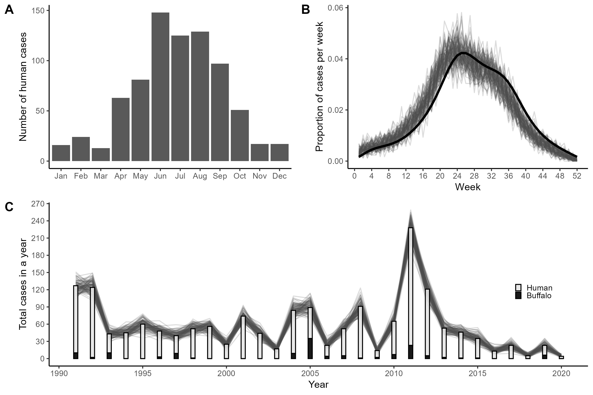
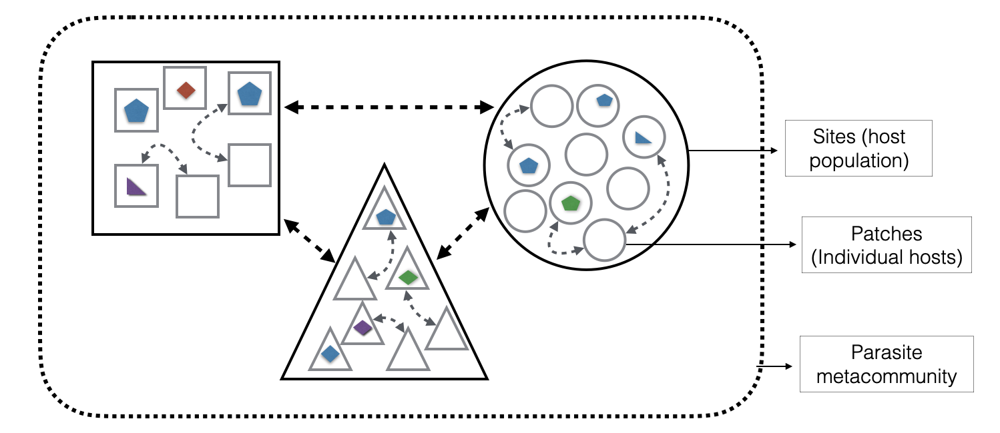

research
My research explores how individual heterogeneity and spatial structure generate rare but consequential events that disproportionately shape ecological and epidemiological dynamics. I’m driven by understanding nature through numbers—finding creative solutions when faced with data limitations, uncertainty, or complex systems that resist traditional approaches.
I’m model-agnostic: I select the best tool for the question rather than adhering to a single framework. My toolkit spans extreme value statistics, Bayesian hierarchical models, spatially-explicit simulations, machine learning, and decision science. I’m committed to open science, and when I have a say, my work is publicly available with annotated code on GitHub.
Research Themes
Individual Heterogeneity & Extreme Dispersal Events

A few highly mobile or highly connected individuals drive disproportionate outcomes—whether seed dispersal or pathogen transmission. My dissertation established methods for characterizing individual heterogeneity in animal movement using extreme value theory, quantifying not average behavior but tail dynamics that generate rare long-distance dispersal events.
This framework translates directly to disease systems: superspreaders exist in the tail of movement or contact distributions. I’m formalizing this through integration of integrated step selection analysis with transmission modeling in deer populations, asking: When does heterogeneity amplify versus dampen outbreak risk? How do landscape features interact with movement heterogeneity? Can movement-based early warning systems predict spillover?
Future directions: Reinforcement learning for surveillance optimization—identifying which individuals, populations, and landscape positions maximize information about emergence risk when resources are limited.
Key collaborations: Universidad San Francisco de Quito (Ecuador), Universidad Austral (Chile)
Hybrid Inference for Resource-Limited Surveillance

Mechanistic epidemiological models need fine-scale data. Real-world surveillance produces yearly case totals, aggregated counts, or opportunistic observations. I develop hybrid frameworks integrating statistical inference, data augmentation, and mechanistic simulations to bridge this gap.
Demonstrated systems: - Anthrax in Vietnam: Semi-synthetic data augmentation fitting mechanistic models to yearly totals (One Health, 2025) - White-nose syndrome in Montana: Structured decision-making under deep uncertainty through stakeholder engagement (in review) - SARS-CoV-2 in deer: Spatially-explicit stochastic epidemic models (PLOS Computational Bio, 2024)
Future work: Generalizing to multi-host, multi-pathogen One Health systems. Through my Global Fellows Award, I’m formalizing international partnerships in Chile and Ecuador where researchers face exactly these data challenges. NSF STAR proposal in development to position UF as hemispheric hub for computational disease ecology capacity building.
Landscape Geometry as Active Driver of Transmission

Classical disease ecology treats landscape as passive backdrop. I’m developing frameworks positioning landscape geometry (fractal dimension, patch configuration, edge density) as an active transmission driver.
In collaboration with Dr. Nicolas Gauthier (Florida Museum), we use vision-language models to extract geometric features from Amazonian satellite imagery and incorporate them into spatially-explicit SIR models. Critically, this is bidirectional: simulate forward (landscape → disease patterns) and work backward through inverse modeling (disease dynamics → geometric signatures).
This positions landscape geometry as an inferential target rather than requiring exhaustive field surveys—essential for tropical systems where satellite imagery is abundant but disease surveillance remains sparse.
Future applications: Vector-borne diseases in fragmented forests, zoonotic spillover at urban-wildland interfaces, waterborne diseases in canal systems. NSF HEGS and eMB proposals in development.
Metacommunity Theory Meets Disease Ecology

For several years I’ve explored parallels between metacommunity ecology and disease ecology: treating pathogens as ecological communities subject to assembly rules across host metacommunities.
I have extensive experience with joint species distribution models (JSDMs), publishing on metacommunity theory and currently leading work exploring how variance in dispersal across species affects community assembly and whether JSDMs can detect these differences. I also co-teach the Advanced Ecology: Theory and Computational Methods course with Dr. Mathew Leibold.
This framework enables surveillance optimization: by modeling pathogens probabilistically across host communities, we identify which species and populations maximize information about pathogen community structure when comprehensive monitoring is prohibitively expensive.
Application: Multi-host zoonotic systems where dozens of pathogen strains circulate but resources are limited.
Methodological Journey
My quantitative training spans probability theory to complex hierarchical models to machine learning. During my PhD (UF Biology/Zoology), I used simulation techniques, bootstrap corrections, and extreme value statistics—while also supporting colleagues on moss genetics and ant-butterfly mutualisms.
My first postdoc (USGS Patuxent) brought Bayesian hierarchical models, occupancy modeling, and mark-recapture methods. My second postdoc (UF Emerging Pathogens Institute) integrated mechanistic models with machine learning and AI applications.
Currently, as Computational Literacy Librarian at UF, I’m building capacity for quantitative approaches across disciplines—teaching Advanced Ecology Methods, developing reproducible research frameworks, and creating open educational resources. This role provides unique freedom to establish international collaborations that benefit entire research communities rather than individual projects.
Computational Capacity Building
Through my 2026 Global Fellows Award, I’m establishing training networks across Latin America with the mission to:
Build local computational infrastructure that persists beyond individual collaborations
Develop workshops and educational materials tailored to resource-limited contexts
Create equitable partnerships where UF serves as hemispheric hub
I’m developing workshops for Ecuador (July 2026) and Chile (December 2026) on computational disease ecology, designed for variable computational access. Materials will be open-source and available to UF students as well.
I’m also mentoring two undergraduate researchers in Spring 2026: one developing an OER module on SIR models and disease ecology, another creating reproducible research templates in R and GitHub in collaboration with Environmental and Global Health Department at UF.
Open Science Commitment
Most of my work is publicly available with annotated code on GitHub. I’ve promoted reproducibility in ecology for years and develop materials emphasizing transparent, reproducible workflows. Exceptions occur when data are regulated by government agencies or I’m not primary owner, but transparency is my default.